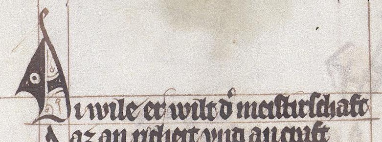

Visuelle Auszeichnungen und Verzierungen
Visuelle Auszeichnungen der Vorlage werden mit dem Element <hi> markiert:
- <hi> ( ›hervorgehoben‹ ) »markiert ein Wort oder eine Textpassage, das/die sich grafisch vom umgebenden Text abhebt, ohne dass ein inhaltlicher Grund dafür angegeben wird.« (↪ TEI)
- @rendition( ›Wiedergabe‹ ) gibt die Art der Auszeichnung mit einem Verweis auf eine Ressource von ›heiEDITIONS Concepts‹ an
- @hei:color
Es können mehrere <hi>-Elemente ineinander geschachtelt sein, wenn ein größeres visuell hervorgehobenes Textsegment ein kleineres Textsegment enthält, das seinerseits auf eine andere Weise visuell ausgezeichnet ist (z. B. ein vergrößerter Buchstabe in einem größeren unterstrichenen Textsegment). Liegen mehrere Typen visueller Hervorhebung auf einem einzigen Textsegment vor, können mehrere Angaben im Attribut @rendition an einem einzigen <hi> kombiniert werden.
Rote Strichelung
hc:RedStroke ( ›rote Strichelung‹ ): Visueller Gegenstand (typischerweise ein Buchstabe), der durch rote Strichelung verziert wurde. Mit roter Strichelung ist dabei eine vertikale Durchstreichung eines zuvor geschriebenen Zeichens mit roter Farbe oder roter Tinte gemeint.
Versal
hc:Versal ( ›Versal‹ ):
Kadelle
hc:Cadel ( ›Kadelle; Cadelle‹ ): »Großbuchstaben des 14. und 15. Jh., deren Schäfte und Bögen aus parallel laufenden, sich zum Teil durchkreuzenden breiten Strichen in Schrifttinte mit der Schreibfeder gebildet sind« (→ Jakobi-Mirwald 42015, S. 60). Allgemeiner auch eine sonstige vergrößerte littera notabilior, eine Satzmajuskel bzw. ein Versal, wenn der Buchstabe mit Schrifttinte ausgeführt (und ggf. rot gestrichelt) und ebenfalls in Schrifttinte verziert ist, ggf. mit Fleuronnée oder figuralen Motiven. Eine Kadelle kann als Initiale eine strukturell-gliedernde Funktion übernehmen, dient aber häufig auch ›nur‹ als visuelle Marke jeweils in der ersten Zeile einer Seite oder Spalte.
Abb. 1: Kadelle als Versal ohne sonstige strukturell-gliedernde Funktion in der ersten Zeile einer Spalte (Stuttgart, Württembergische Landesbibliotek, HB V 95, fol. 8r, https://digi.ub.uni-heidelberg.de/diglit/wlb_hb_v_95/0019 bzw. ↪ http://digital.wlb-stuttgart.de/purl/bsz343181304/page/19, Abbildung gemeinfrei).
Farbe
Textsegmente, die sich durch ihre Farbe abheben, können am Element <hi> mit dem Attribut @hei:color markiert werden. Mögliche Attributwerte sind dabei bislang z. B. Red, Blue und Green. Bei diesen Werten handelt es sich um keine Konzepte von ›heiEDITIONS‹, den Attributwerten wird also kein hc: vorangestelt.

Abb. 3: Mit roter Farbe geschriebener Text (Wolfenbüttel, Herzog August Bibliothek, Cod. Guelf. 37.19 Aug. 2°, fol. 21v, ↪ https://doi.org/10.11588/diglit.24512#0044).
Zitierte Literatur
- Jakobi-Mirwald 42015
- Jakobi-Mirwald, Christine: Buchmalerei : Terminologie in der Kunstgeschichte. 4., überarb. Aufl. unter Mitarbeit von Martin Roland. Berlin : Reimer, 2015. – ISBN 978-3-496-01499-7